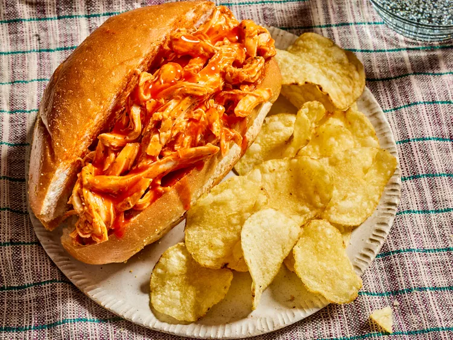

Slow Cooker Buffalo Chicken Sandwiches

Description:
This crockpot Buffalo chicken is great for hearty sandwiches that will please those who love Buffalo chicken wings. This recipe is perfect for those days spent watching football. I like to top these with blue cheese or ranch dressing.
Ingredients
- 4 skinless, boneless chicken breast halves
- 1 (17.5 fluid ounce) bottle Buffalo wing sauce, divided
- ½ (1 ounce) package dry ranch salad dressing mix
- 2 tablespoons butter
- 6 hoagie rolls, split lengthwise
Steps:
- Gather all ingredients.
- Place chicken breasts into the slow cooker; pour in 3/4 of the wing sauce and ranch dressing mix.
- Cover and cook on Low for 6 to 7 hours.
- Shred chicken in the cooker with two forks. Stir in butter.
- Pile shredded chicken and sauce onto hoagie rolls. Serve with remaining Buffalo sauce.
- Serve and enjoy!
Home